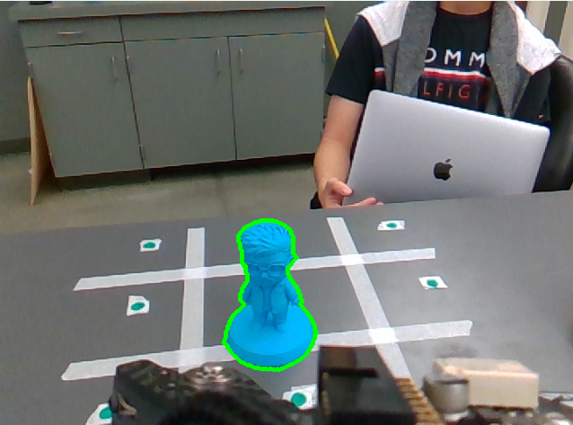
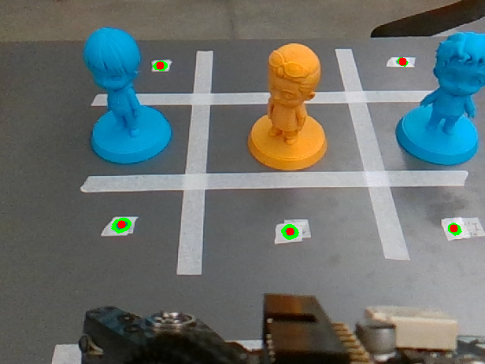
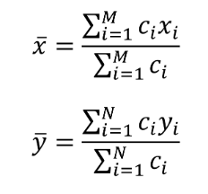
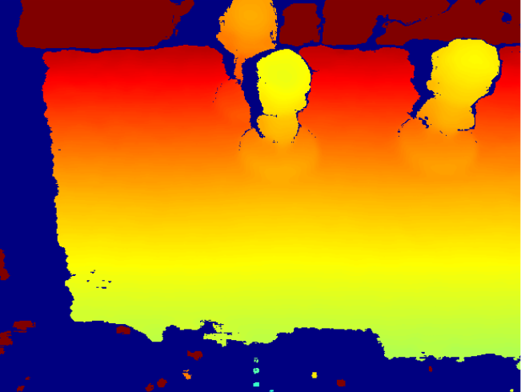

Color detection
The perception pipeline relies on OpenCV. Frames from the RGB camera are converted from BGR to HSV, which makes it much easier to tune color boundaries for the gold robot tokens and the blue human tokens. The team used HSV bounds to reduce background interference and create masks for the pieces.
Capture
The camera connection captures a frame into a NumPy array containing pixel rows, columns, and BGR channels.
Convert
The frame is converted into HSV so hue, saturation, and brightness can be tuned more directly than raw RGB.
Mask
HSV boundaries isolate a chosen token color and suppress much of the table and lighting noise.


Contour and centroid logic
After masking, the code finds contours and filters them by area to reject noise. The remaining contours are used to compute centroids through image moments. Additional helper functions order centroids to match the board and check repeated frames so the game state is based on stable readings rather than one noisy frame.


Depth detection
The Intel RealSense D415 depth sensor was tested to help distinguish similar-colored objects, but the final project relied mostly on RGB because depth noise made the contour separation unreliable. The report describes attempts to split objects by depth edges, but the token depth variation made that method inconsistent.
Tic-tac-toe algorithm
The robot uses a minimax algorithm to play perfectly in a two-player, deterministic game. The algorithm recursively evaluates future move sequences and selects the move that maximizes the robot's worst-case outcome, assuming the human player also plays optimally. A win is rewarded more strongly when it happens sooner, while losses are penalized less when they take longer to occur.
Game controller
A higher-level controller ties the camera functions, robot motion, and game logic together. The loop watches for a new human move, updates the move array, asks the minimax logic for the best robot response, and then sends the arm to pick up and place the correct token. The same controller also handles end-of-game checks for wins and draws.
Board update
Centroids and missing-grid logic are used to infer where the human placed the most recent piece.
Robot response
The best move is selected from the move array, then executed with the stored coordinate dictionary and motion functions.